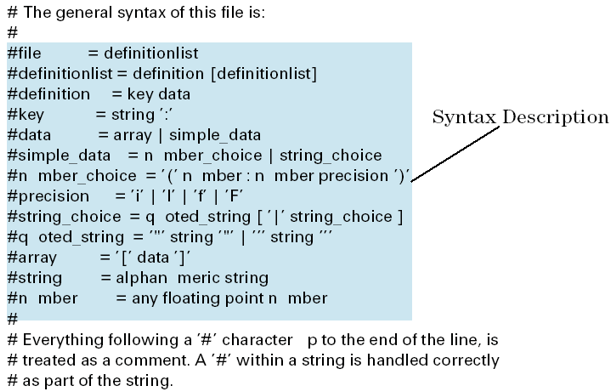

Changing an Attribute Definition
Changes of an attribute definition must be made according to the syntax description (shown below) which is included at the beginning of each default attributes definition file. This description defines how valid parameter settings can be specified.
Syntax description of an attributes definition file:

For examples of syntactically correct attribute definitions, look at the shattrib, or spattrib files provided with the plug-ins.